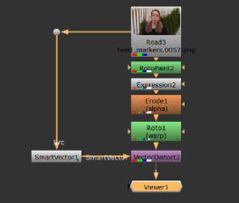
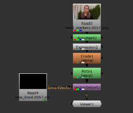
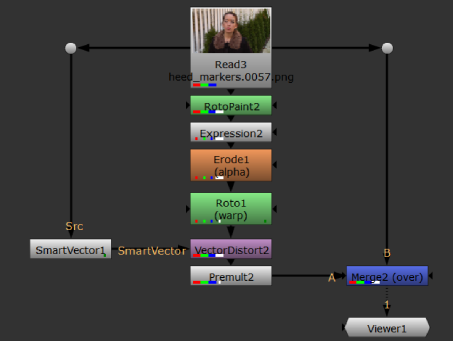
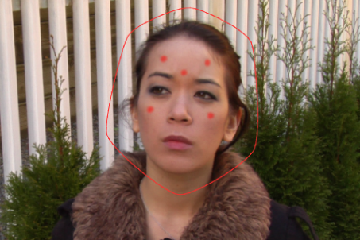

Once you've generated your motion vectors and added your paint to the source sequence, the VectorDistort node takes the paint from the reference frame and propagates it through the rest of the sequence using the motion vectors from the SmartVector node.
After generating your vectors, applying your corrections, and masking out areas of the sequence you don't want to process, use VectorDistort to push your work through the rest of the sequence.
| 1. | Add a VectorDistort node to the Node Graph and connect the Src input to your sequence, downstream of the paint or image you intend to propagate. |
| 2. | Connect the SmartVector input to either the SmartVector node or a Read node referencing the .exr files containing the motion vector data. |
|
 |
 |
| 3. | Double-click the VectorDistort node to open its properties, if they're not already open. |
| 4. | Scrub to the frame containing your paint or image and click set to current frame to set the VectorDistort reference frame. |
TIP: If you know what frame your paint or image is applied to, you can type the frame number into the reference frame control manually.
Scrubbing in the Viewer at this stage introduces undesirable warping because the whole source frame is warped. As you move farther from the reference frame, the warping increases.
|
|
|
|
Warp close to the reference frame. |
Warp far from the reference frame. |
| 5. | Set the mask channel to the channel specified under Masking Warp Areas. This limits the scope of the warp and speeds up processing time. |
| 6. | To apply the warp to the original sequence, premultiply the paint or image and then merge the result over the source. |

For short sequences, or sequences with minimal movement and detail, your corrections should propagate nicely as shown.
|
|
|
If you see that your corrections warp incorrectly over time, you can use VectorDistort's properties to massage the results (see Improving Warps) or use multiple VectorDistort nodes to apply warps for several reference frames (see Warping Multiple Reference Frames).
VectorDistort warps the entire frame by default, so you can improve performance by masking out areas of the frame that you don't want to warp. Any pixels with a non-zero mask channel are warped, that is, anything within the mask. Unlike most mask channels, VectorDistort's mask applies a gradual warp from 0-1, where 0 is no warp and 1 is full warp.
To apply a mask to the sequence:
| 1. | Add a Roto node downstream of your corrections to the source. |
| 2. | Draw a bezier on the reference frame around the area you want to warp. |
TIP: You might find it easier to draw the mask if you enable the Mat display style. Press M over the Viewer to display your corrections.

| 3. | Now when you add a VectorDistort node to the script, set the mask channel to the channel specified in the Roto node. See Warping the Vectors for more details. |
NOTE: If you use a custom mask channel, set the mask channel control to all to ensure the mask is applied.
|
|